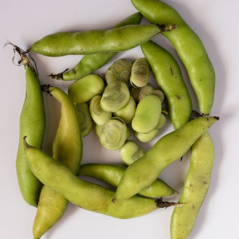
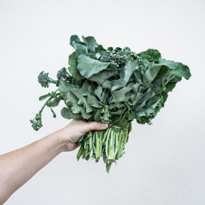
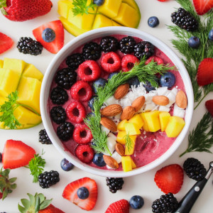
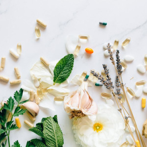

Ricette vegetali, facili e veloci
LASCIATI ISPIRAREScopri i libri di Cucina Botanica,
due guide semplici e complete per
avere la cucina
vegetale sempre a
portata di mano
Alimentazione vegetale: consigli e curiosità

Legumi e gonfiore

Il calcio
nell' alimentazione
vegetale

Alimentazione crudista:
Pro e Contro

La vitamina B12:
perchè e come assumerla in
un' alimentazione
prevalentemente o
completamente vegana
Entra a far parte della community
di Cucina Botanica
ISCRIVITI ALLA NEWSLETTER PER
NON PERDERTI GLI AGGIORNAMENTI